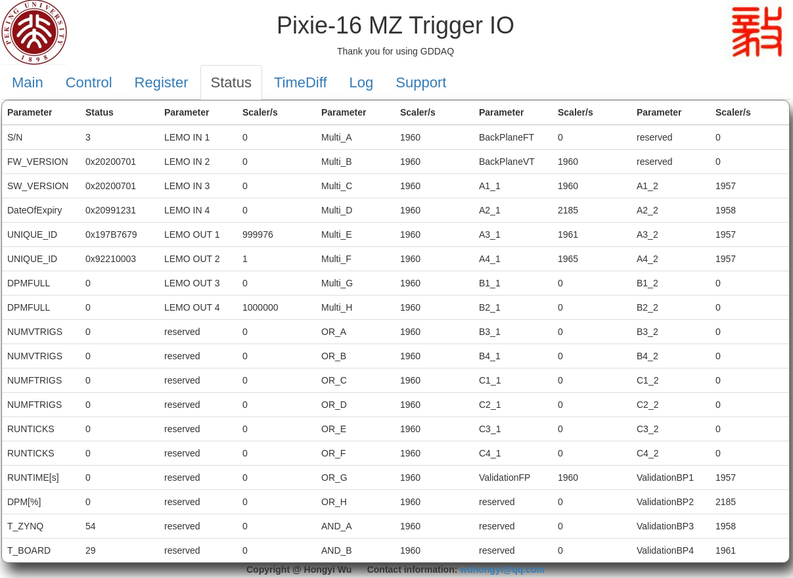

demo version 01¶
In order to facilitate GDDAQ users to be familiar with the logic functions of Pixie-16 module and the characteristics of PKU firmware, this firmware was specially developed for teaching. Users can download the corresponding version firmware and web control program at https://github.com/wuhongyi/MZTIO/ .
The version/01 folder contains the firmware xillydemo.bit and the control web www folder. This firmware and its supporting control program can only be used for learning, please contact Hongyi Wu get the experimental version.
The top 12 RJ-45 connectors on the front panel of the MZTIO are represented by the following symbols from top to bottom: A1, A2, A3, A4, B1, B2, B3, B4, C1, C2, C3, C4. The RJ-45 connector on the Pixie-16 module in the PKU firmware outputs the multiplicity logic signals of channel 0 and channel 1, which are denoted by _I and _II, respectively. Then A1_I represents the multiplicity logic of channel 0 in the Pixie-16 module connected to the first RJ-45 port of MZTIO.
Control register¶

The button “Program FPGA” is used to initialize the system configuration. When the operating system is powered on, click this button to complete the system initialization.
Five experimental setup parameters can be saved, which are “Experimental setup 1-5”. After modifying the register to configure the experiment logic, user can click the “Save” button to save, and the current FPGA register parameters will be saved to the selected experiment configuration. The button “Load” is used to load the selected experiment configuration into the FPGA.
The four LEMO input channels are named LEMO1, LEMO2, LEMO3, LEMO4. The LEMO4 is connected to the “run inhibit” signal on the back panel of the chassis. When the input signal is high, the acquisition system stops running.
The monitoring part of the oscilloscope is used to select the output signals of the four LEMO output channels. The following table lists all currently available options. Click the “Read” button to read the current setting parameters. The button “Change” is used to write the parameters of the current input box to the FPGA.
vaule |
signal |
|---|---|
00 |
A1_I |
01 |
A1_II |
02 |
A2_I |
03 |
A2_II |
04 |
A3_I |
05 |
A3_II |
06 |
A4_I |
07 |
A4_II |
08 |
B1_I |
09 |
B1_II |
10 |
B2_I |
11 |
B2_II |
12 |
B3_I |
13 |
B3_II |
14 |
B4_I |
15 |
B4_II |
16 |
C1_I |
17 |
C1_II |
18 |
C2_I |
19 |
C2_II |
20 |
C3_I |
21 |
C3_II |
22 |
C4_I |
23 |
C4_II |
24 |
LEMO input 1 |
25 |
LEMO input 2 |
26 |
LEMO input 3 |
27 |
LEMO input 4 |
28 |
DEBUG0 |
29 |
DEBUG1 |
30 |
DEBUG2 |
31 |
DEBUG3 |
32 |
10M clock |
33 |
1M clock |
34 |
100k clock |
35 |
10k clock |
36 |
1k clock |
37 |
ets clock |
40 |
AND_A |
41 |
AND_B |
48 |
multi_A |
49 |
multi_B |
50 |
multi_C |
51 |
multi_D |
52 |
multi_E |
53 |
multi_F |
54 |
multi_G |
55 |
multi_H |
56 |
OR_A |
57 |
OR_B |
58 |
OR_C |
59 |
OR_D |
60 |
OR_E |
61 |
OR_F |
62 |
OR_G |
63 |
OR_H |
The register setting part is used to read or modify register setting parameters. When reading the register, user need to enter the address of the register to be read, and then click the button “Read”; when modifying the register, input the address and parameter value of the register to be modified, and then click the button “Write”.
vaule |
function |
|---|---|
0x30 |
DelayAndExtend1(not used now [15:0]delay [31:16]stretch) |
0x31 |
DelayAndExtend2(not used now [15:0]delay [31:16]stretch) |
0x32 |
DelayAndExtend3(not used now [15:0]delay [31:16]stretch) |
0x33 |
DelayAndExtend4(not used now [15:0]delay [31:16]stretch) |
0x34 |
DelayAndExtend5(not used now [15:0]delay [31:16]stretch) |
0x35 |
DelayAndExtend6(not used now [15:0]delay [31:16]stretch) |
0x36 |
DelayAndExtend7(not used now [15:0]delay [31:16]stretch) |
0x37 |
DelayAndExtend8(not used now [15:0]delay [31:16]stretch) |
0x38 |
DelayAndExtend9(not used now [15:0]delay [31:16]stretch) |
0x39 |
DelayAndExtend10(not used now [15:0]delay [31:16]stretch) |
0x3A |
DelayAndExtend11(not used now [15:0]delay [31:16]stretch) |
0x3B |
DelayAndExtend12(not used now [15:0]delay [31:16]stretch) |
0x3C |
DelayAndExtend13(not used now [15:0]delay [31:16]stretch) |
0x3D |
DelayAndExtend14(not used now [15:0]delay [31:16]stretch) |
0x3E |
DelayAndExtend15(not used now [15:0]delay [31:16]stretch) |
0x3F |
DelayAndExtend16(not used now [15:0]delay [31:16]stretch) |
0x45 |
external timestamp clock(0:10M 1:1M 2:100k 3: 10k 4:1k) |
0x50 |
TriggerModeFP(00:A1_I 01:A1_II 02:A2_I 03:A2_II 04:A3_I 05:A3_II 06:A4_I 07:A4_II 08:B1_I 09:B1_II 10:B2_I 11:B2_II 12:B3_I 13:B3_II 14:B4_I 15:B4_II 16:C1_I 17:C1_II 18:C2_I 19:C2_II 20:C3_I 21:C3_II 22:C4_I 23:C4_II) |
0x51 |
TriggerModeBP1(not used now) |
0x52 |
TriggerModeBP2(not used now) |
0x53 |
TriggerModeBP3(not used now) |
0x54 |
TriggerModeBP4(not used now) |
0x60 |
multi_A([23:0] bit mask 0:A1_I 1:A1_II 2:A2_I 3:A2_II 4:A3_I 5:A3_II 6:A4_I 7:A4_II 8:B1_I 9:B1_II 10:B2_I 11:B2_II 12:B3_I 13:B3_II 14:B4_I 15:B4_II 16:C1_I 17:C1_II 18:C2_I 19:C2_II 20:C3_I 21:C3_II 22:C4_I 23:C4_II [31:24] multi) |
0x61 |
multi_B([23:0] bit mask 0:A1_I 1:A1_II 2:A2_I 3:A2_II 4:A3_I 5:A3_II 6:A4_I 7:A4_II 8:B1_I 9:B1_II 10:B2_I 11:B2_II 12:B3_I 13:B3_II 14:B4_I 15:B4_II 16:C1_I 17:C1_II 18:C2_I 19:C2_II 20:C3_I 21:C3_II 22:C4_I 23:C4_II [31:24] multi) |
0x62 |
multi_C([23:0] bit mask 0:A1_I 1:A1_II 2:A2_I 3:A2_II 4:A3_I 5:A3_II 6:A4_I 7:A4_II 8:B1_I 9:B1_II 10:B2_I 11:B2_II 12:B3_I 13:B3_II 14:B4_I 15:B4_II 16:C1_I 17:C1_II 18:C2_I 19:C2_II 20:C3_I 21:C3_II 22:C4_I 23:C4_II [31:24] multi) |
0x63 |
multi_D([23:0] bit mask 0:A1_I 1:A1_II 2:A2_I 3:A2_II 4:A3_I 5:A3_II 6:A4_I 7:A4_II 8:B1_I 9:B1_II 10:B2_I 11:B2_II 12:B3_I 13:B3_II 14:B4_I 15:B4_II 16:C1_I 17:C1_II 18:C2_I 19:C2_II 20:C3_I 21:C3_II 22:C4_I 23:C4_II [31:24] multi) |
0x64 |
multi_E([23:0] bit mask 0:A1_I 1:A1_II 2:A2_I 3:A2_II 4:A3_I 5:A3_II 6:A4_I 7:A4_II 8:B1_I 9:B1_II 10:B2_I 11:B2_II 12:B3_I 13:B3_II 14:B4_I 15:B4_II 16:C1_I 17:C1_II 18:C2_I 19:C2_II 20:C3_I 21:C3_II 22:C4_I 23:C4_II [31:24] multi) |
0x65 |
multi_F([23:0] bit mask 0:A1_I 1:A1_II 2:A2_I 3:A2_II 4:A3_I 5:A3_II 6:A4_I 7:A4_II 8:B1_I 9:B1_II 10:B2_I 11:B2_II 12:B3_I 13:B3_II 14:B4_I 15:B4_II 16:C1_I 17:C1_II 18:C2_I 19:C2_II 20:C3_I 21:C3_II 22:C4_I 23:C4_II [31:24] multi) |
0x66 |
multi_G([23:0] bit mask 0:A1_I 1:A1_II 2:A2_I 3:A2_II 4:A3_I 5:A3_II 6:A4_I 7:A4_II 8:B1_I 9:B1_II 10:B2_I 11:B2_II 12:B3_I 13:B3_II 14:B4_I 15:B4_II 16:C1_I 17:C1_II 18:C2_I 19:C2_II 20:C3_I 21:C3_II 22:C4_I 23:C4_II [31:24] multi) |
0x67 |
multi_H([23:0] bit mask 0:A1_I 1:A1_II 2:A2_I 3:A2_II 4:A3_I 5:A3_II 6:A4_I 7:A4_II 8:B1_I 9:B1_II 10:B2_I 11:B2_II 12:B3_I 13:B3_II 14:B4_I 15:B4_II 16:C1_I 17:C1_II 18:C2_I 19:C2_II 20:C3_I 21:C3_II 22:C4_I 23:C4_II [31:24] multi) |
0x68 |
OR_A([31:0] bit mask 0:A1_I 1:A1_II 2:A2_I 3:A2_II 4:A3_I 5:A3_II 6:A4_I 7:A4_II 8:B1_I 9:B1_II 10:B2_I 11:B2_II 12:B3_I 13:B3_II 14:B4_I 15:B4_II 16:C1_I 17:C1_II 18:C2_I 19:C2_II 20:C3_I 21:C3_II 22:C4_I 23:C4_II 24:multi_A 25:multi_B 26:multi_C 27:multi_D 28:multi_E 29:multi_F 30:multi_G 31:multi_H) |
0x69 |
OR_B([31:0] bit mask 0:A1_I 1:A1_II 2:A2_I 3:A2_II 4:A3_I 5:A3_II 6:A4_I 7:A4_II 8:B1_I 9:B1_II 10:B2_I 11:B2_II 12:B3_I 13:B3_II 14:B4_I 15:B4_II 16:C1_I 17:C1_II 18:C2_I 19:C2_II 20:C3_I 21:C3_II 22:C4_I 23:C4_II 24:multi_A 25:multi_B 26:multi_C 27:multi_D 28:multi_E 29:multi_F 30:multi_G 31:multi_H) |
0x6A |
OR_C([31:0] bit mask 0:A1_I 1:A1_II 2:A2_I 3:A2_II 4:A3_I 5:A3_II 6:A4_I 7:A4_II 8:B1_I 9:B1_II 10:B2_I 11:B2_II 12:B3_I 13:B3_II 14:B4_I 15:B4_II 16:C1_I 17:C1_II 18:C2_I 19:C2_II 20:C3_I 21:C3_II 22:C4_I 23:C4_II 24:multi_A 25:multi_B 26:multi_C 27:multi_D 28:multi_E 29:multi_F 30:multi_G 31:multi_H) |
0x6B |
OR_D([31:0] bit mask 0:A1_I 1:A1_II 2:A2_I 3:A2_II 4:A3_I 5:A3_II 6:A4_I 7:A4_II 8:B1_I 9:B1_II 10:B2_I 11:B2_II 12:B3_I 13:B3_II 14:B4_I 15:B4_II 16:C1_I 17:C1_II 18:C2_I 19:C2_II 20:C3_I 21:C3_II 22:C4_I 23:C4_II 24:multi_A 25:multi_B 26:multi_C 27:multi_D 28:multi_E 29:multi_F 30:multi_G 31:multi_H) |
0x6C |
OR_E([31:0] bit mask 0:A1_I 1:A1_II 2:A2_I 3:A2_II 4:A3_I 5:A3_II 6:A4_I 7:A4_II 8:B1_I 9:B1_II 10:B2_I 11:B2_II 12:B3_I 13:B3_II 14:B4_I 15:B4_II 16:C1_I 17:C1_II 18:C2_I 19:C2_II 20:C3_I 21:C3_II 22:C4_I 23:C4_II 24:multi_A 25:multi_B 26:multi_C 27:multi_D 28:multi_E 29:multi_F 30:multi_G 31:multi_H) |
0x6D |
OR_F([31:0] bit mask 0:A1_I 1:A1_II 2:A2_I 3:A2_II 4:A3_I 5:A3_II 6:A4_I 7:A4_II 8:B1_I 9:B1_II 10:B2_I 11:B2_II 12:B3_I 13:B3_II 14:B4_I 15:B4_II 16:C1_I 17:C1_II 18:C2_I 19:C2_II 20:C3_I 21:C3_II 22:C4_I 23:C4_II 24:multi_A 25:multi_B 26:multi_C 27:multi_D 28:multi_E 29:multi_F 30:multi_G 31:multi_H) |
0x6E |
OR_G([31:0] bit mask 0:A1_I 1:A1_II 2:A2_I 3:A2_II 4:A3_I 5:A3_II 6:A4_I 7:A4_II 8:B1_I 9:B1_II 10:B2_I 11:B2_II 12:B3_I 13:B3_II 14:B4_I 15:B4_II 16:C1_I 17:C1_II 18:C2_I 19:C2_II 20:C3_I 21:C3_II 22:C4_I 23:C4_II 24:multi_A 25:multi_B 26:multi_C 27:multi_D 28:multi_E 29:multi_F 30:multi_G 31:multi_H) |
0x6F |
OR_H([31:0] bit mask 0:A1_I 1:A1_II 2:A2_I 3:A2_II 4:A3_I 5:A3_II 6:A4_I 7:A4_II 8:B1_I 9:B1_II 10:B2_I 11:B2_II 12:B3_I 13:B3_II 14:B4_I 15:B4_II 16:C1_I 17:C1_II 18:C2_I 19:C2_II 20:C3_I 21:C3_II 22:C4_I 23:C4_II 24:multi_A 25:multi_B 26:multi_C 27:multi_D 28:multi_E 29:multi_F 30:multi_G 31:multi_H) |
0x70 |
AND_A([31:0] bit mask 0:A1_I 1:A1_II 2:A2_I 3:A2_II 4:A3_I 5:A3_II 6:A4_I 7:A4_II 8:B1_I 9:B1_II 10:B2_I 11:B2_II 12:B3_I 13:B3_II 14:B4_I 15:B4_II 16:C1_I 17:C1_II 18:C2_I 19:C2_II 20:C3_I 21:C3_II 22:C4_I 23:C4_II 24:OR_A 25:OR_B 26:OR_C 27:OR_D 28:OR_E 29:OR_F 30:OR_G 31:OR_H) |
0x71 |
AND_B([31:0] bit mask 0:A1_I 1:A1_II 2:A2_I 3:A2_II 4:A3_I 5:A3_II 6:A4_I 7:A4_II 8:B1_I 9:B1_II 10:B2_I 11:B2_II 12:B3_I 13:B3_II 14:B4_I 15:B4_II 16:C1_I 17:C1_II 18:C2_I 19:C2_II 20:C3_I 21:C3_II 22:C4_I 23:C4_II 24:OR_A 25:OR_B 26:OR_C 27:OR_D 28:OR_E 29:OR_F 30:OR_G 31:OR_H) |
The webpage can also be used to shut down the LINUX OS in MZTIO. Clicking the red button “SHUTDOWN OS” will pop up a password input box. After entering the correct password, the OS will be shut down immediately. After that, user will not be able to access the webpage. User need to power on again to start the operating system before use. This button is only used to shut down the MZTIO operating system before shutting down the chassis.
The yellow button “UPDATE FW” is used to upgrade the firmware and restart the operating system. The firmware to be upgraded needs to be placed in the /root directory, and then click the button. If the firmware upgrade is successful, the web page will prompt that the operating system will restart after one minute, if the upgrade fails, it prompts that the firmware file cannot be found.
Register status¶
This page is used to view the user setting register parameters.
Trigger rate¶
This page is used for real-time count rate monitoring. The current version includes the count rate of 4 LEMO input channels, 4 LEMO output channels, Multi_A-H, OR_A-H, and 12 RJ-45 connectors input (Pixie-16 output multiplicity).
Time difference measurement¶

This page implements the time difference measurement of any two logic signals (chA-chB, a time difference greater than 0 means that the chA signal is later than the chB signal). The button “Read” is used to read the signal source parameters; the button “Write” is used to change the signal source; the button “Clear” is used to clear the time difference spectrum in the FPGA. When the signal source is changed, the time difference spectrum in the FPGA must be cleared. The button “Update” can be used to read the current time difference spectrum from the FPGA and display it on the web page.
vaule |
signal |
|---|---|
00 |
A1_I |
01 |
A1_II |
02 |
A2_I |
03 |
A2_II |
04 |
A3_I |
05 |
A3_II |
06 |
A4_I |
07 |
A4_II |
08 |
B1_I |
09 |
B1_II |
10 |
B2_I |
11 |
B2_II |
12 |
B3_I |
13 |
B3_II |
14 |
B4_I |
15 |
B4_II |
16 |
C1_I |
17 |
C1_II |
18 |
C2_I |
19 |
C2_II |
20 |
C3_I |
21 |
C3_II |
22 |
C4_I |
23 |
C4_II |
24 |
DPMFULLOUT |
25 |
SYNCOUT |
26 |
ETLOCAL |
27 |
FTLOCAL |
28 |
DEBUG0 |
29 |
DEBUG1 |
30 |
DEBUG2 |
31 |
DEBUG3 |
32 |
LEMO input 1 |
33 |
LEMO input 2 |
34 |
LEMO input 3 |
35 |
LEMO input 4 |
40 |
AND_A |
41 |
AND_B |
48 |
multi_A |
49 |
multi_B |
50 |
multi_C |
51 |
multi_D |
52 |
multi_E |
53 |
multi_F |
54 |
multi_G |
55 |
multi_H |
56 |
OR_A |
57 |
OR_B |
58 |
OR_C |
59 |
OR_D |
60 |
OR_E |
61 |
OR_F |
62 |
OR_G |
63 |
OR_H |